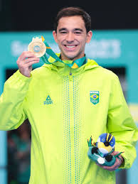
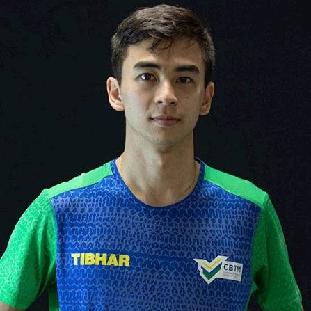
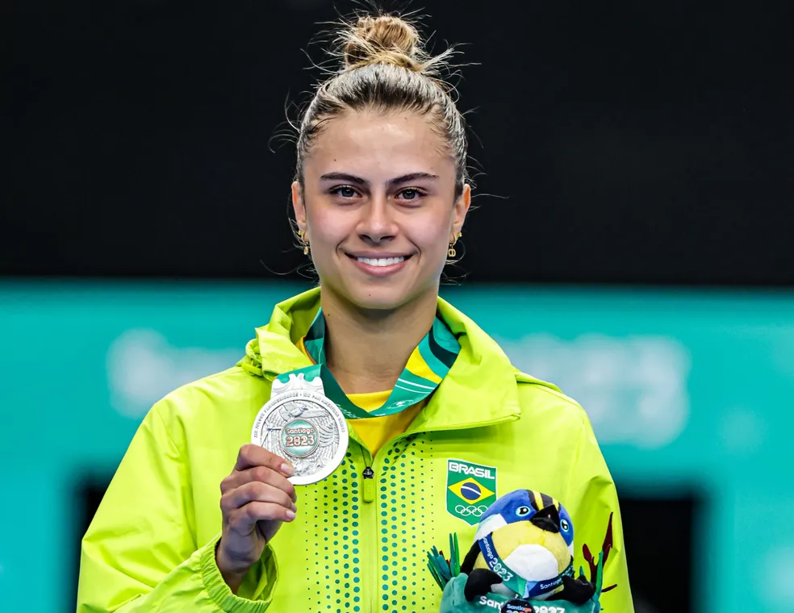

🏓Tenis de Mesa no Brasil🏓
O tenis de mesa é um esporte que esta crescendo a cada dia mais no brasil. com isso a visibilidade do esporte no pais esta aumentado muito.
Hugo Calderano

Ele é o melhor jogador do Brasil. Em 2025 ele ganhou a Copa do Mundo na China.
Ele é carioca e tem 29 anos. Joga muito bem.
Coisas que ele fez:
- Ficou em 2 lugar no ranking mundial
- Ganhou o Pan-Americano 3 vezes
- Foi o primeiro não-europeu a ganhar a Copa do Mundo de tenis de mesa
jogadores brasileiros reconhecidos mundialmente
Vitor Ishiy

vitor já fez grandes feitos pelo brasil como:
- Venceu o torneio em Assunção, no Paraguai, superando grandes favoritos continentais.
- Fundamental na conquista da medalha dourada para o Brasil.
- Medalhas em Circuito Mundial (WTT): Conquistou a prata nas duplas no WTT Contender de Mendoza e o bronze no WTT Contender do Rio de Janeiro em 2024 ao lado de Guilherme Teodoro.
Bruna Takahashi

Ela é a melhor jogadora feminina do Brasil. pois já:
- Foi Top 20 mundial: Primeira brasileira a entrar no top 50, top 20 e alcançar o posto de 16ª do mundo em abril de 2025.
- Campeonato Pan-Americano: Medalhas de prata em 2019, 2021 e 2023, além do título da Copa Pan-Americana em 2024.
- Melhor não-asiática: Tornou-se a melhor atleta não-asiática no ranking da ITTF em simples em outubro de 2025.
Competiçoes no Brasil
- Campeonato Brasileiro
- brasileirão de inverno
- liga estadual
CBTM (um pouco mais sobre a seleção brasileira no tenis de mesa)
O mundo das raquetes! giro rapido
Principais marcas usadas atualmente
Butterfly
- Marca número 1 do mundo – usada pela grande maioria dos campeões olímpicos e profissionais.
- Qualidade suprema – materiais nobres, duráveis e com desempenho impecável.
- Luxo e exclusividade – equipamentos mais caros do mercado, símbolo de status no esporte.
- Inovadora – criadora das tecnologias High Tension, que revolucionaram velocidade e efeito.
- Referência absoluta – é a grife do tênis de mesa, sinônimo de excelência e prestígio.